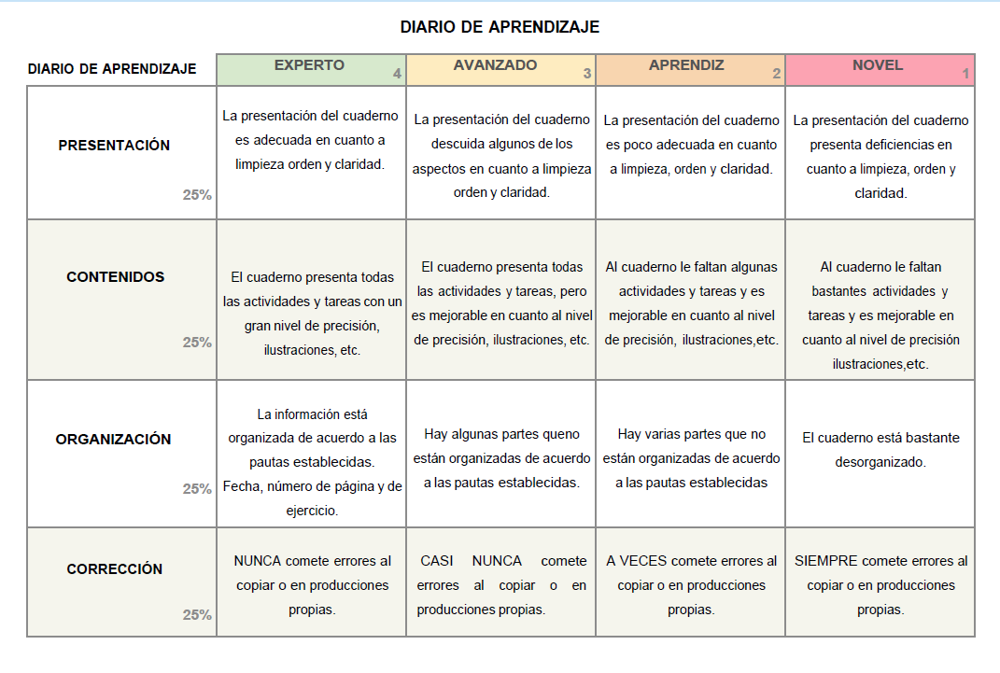
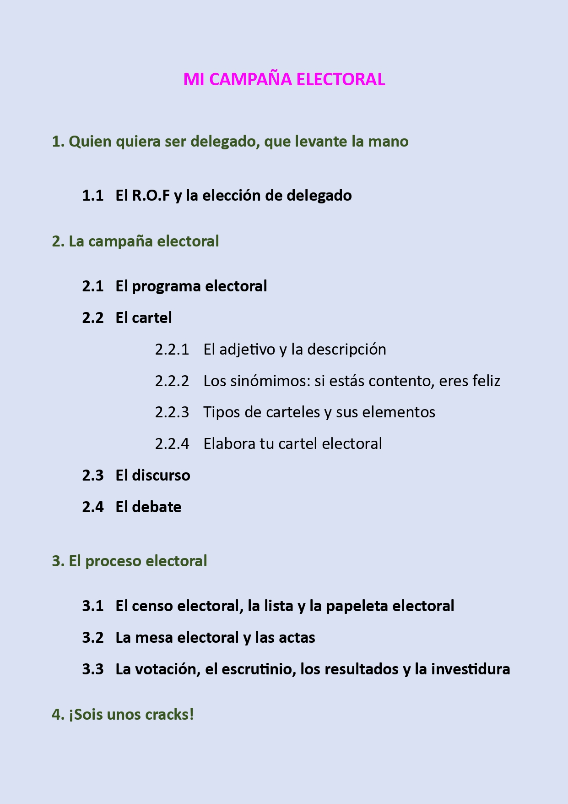

Diario de aprendizaje
A lo largo de esta situación de aprendizaje, vamos a aprender a realizar un diario de aprendizaje, en el que iremos anotando todo lo que vayamos aprendiendo. Es muy importante que pongas esmero en su realización, ya que se te evaluará al final con la siguiente rúbrica:

Cuando veas la siguiente imagen sabrás que tienes que realizar esa actividad en el diario de aprendizaje.

A. Elaboramos nuestro diario de aprendizaje
Para realizar tu diario de aprendizaje necesitarás:
- Dos cartulinas tamaño folio.
- Folios.
- Una falsilla que pondrás detrás de cada folio.
- Dos clips.
Aspectos importantes:
NO utilices rotuladores ya que vamos a utilizar el folio por ambos lados.
NO pierdas la falsilla, la vas a necesitar durante todo el curso.
Escribe con buena letra y con limpieza pues se evaluará el diario de aprendizaje.
Apóyate sobre una libreta para mayor comodidad.
Recuerda siempre poner el título de la página. Lo puedes encontrar en el REA y en el índice de tu diario de aprendizaje.
B. ¡ Comenzamos !
Coge un folio, la falsilla y los clips.
Copia el índice de este R.E.A.

C. Evaluación
Algunas de las tareas que vas a realizar serán evaluables. Cuando lo sean te lo indicará la siguiente imagen: